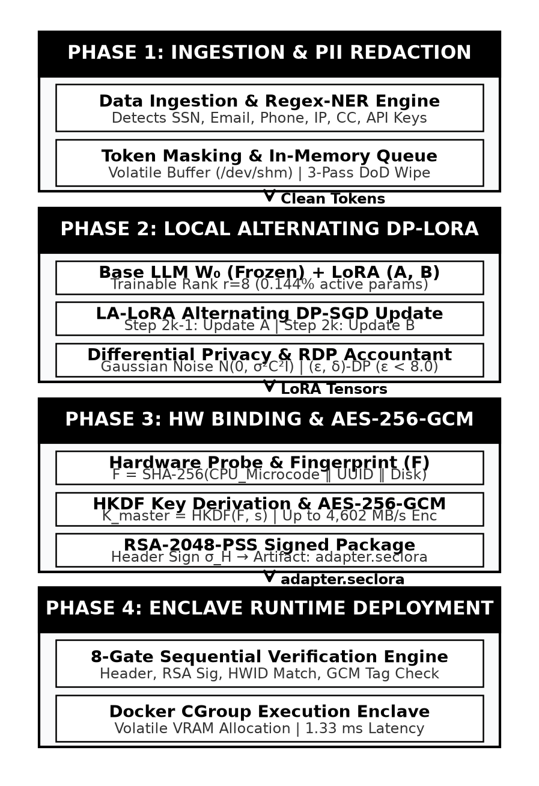
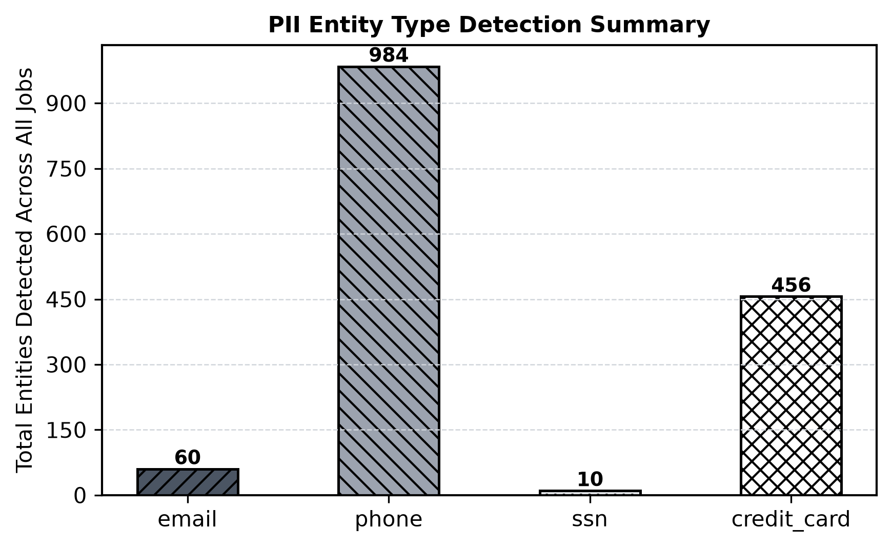
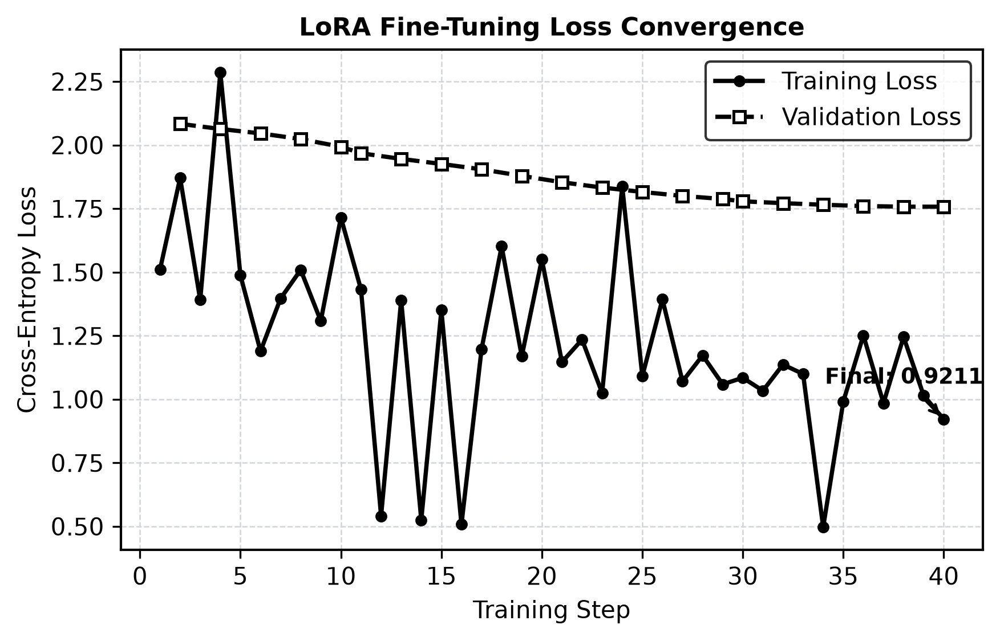
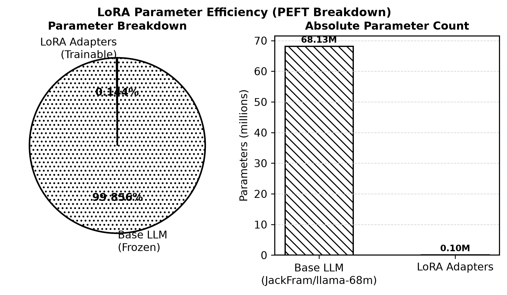
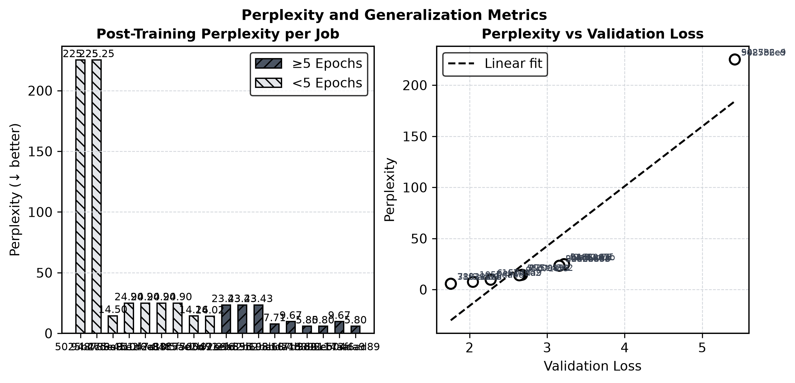
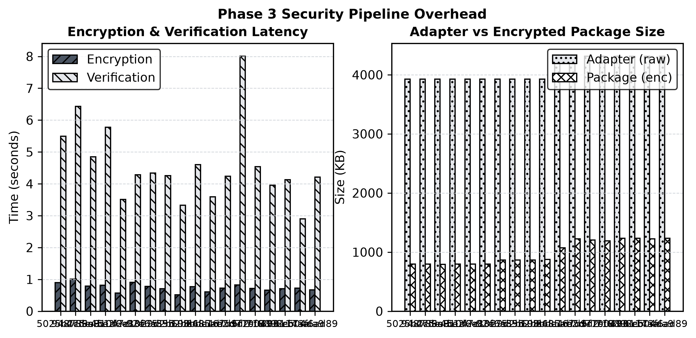
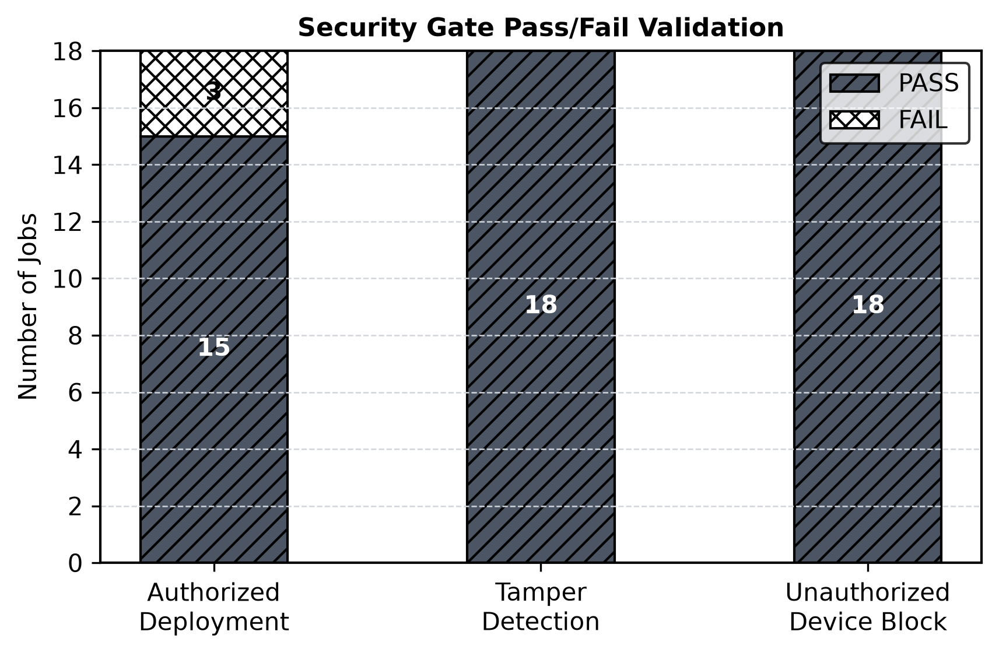

Modern Natural Language Processing (NLP) is anchored in the pre-train and fine-tune paradigm. Transformer-based foundation models are pre-trained on massive web-scale corpora and subsequently adapted to downstream domain tasks (e.g., clinical report processing, legal document synthesis, and automated finance). Full fine-tuning of multi-billion parameter models is computationally prohibitive; storing optimizer states for a 175B parameter LLM requires over 2.4 TB of VRAM.
To address this challenge, Parameter-Efficient Fine-Tuning (PEFT) techniques—most notably Low-Rank Adaptation (LoRA) [1]—freeze the base model weights W0 ∈ &mathbb;Rd × k and inject trainable rank-decomposition matrices ΔW = B · A, where B ∈ &mathbb;Rd × r, A ∈ &mathbb;Rr × k with rank r ≪ min(d, k). LoRA reduces trainable parameters by up to 10,000× without incurring inference latency overhead.
Despite efficiency gains, organizations fine-tuning LLMs on proprietary data face three critical vulnerabilities:
To resolve these conflicting trade-offs, we present SecureLoRA. Our main contributions are:
Table I synthesizes five baseline paradigms, identifying the security and privacy gaps closed by SecureLoRA.
| Work / Baseline | Core Methodology | Primary Advantage | Identified Vulnerability / Gap |
|---|---|---|---|
| Hu et al. (LoRA) [1] | Low-rank update W = W0 + BA; rank r ≪ d. | 10,000× parameter reduction; 0% latency. | Zero privacy/security; vulnerable to physical theft. |
| Abadi et al. (DP-SGD) [5] | Gradient clipping norm C + Gaussian noise σ. | (ε, δ)-DP bounds against memorization. | Naive DP on LoRA causes quadratic noise coupling. |
| Liu et al. (LA-LoRA) [6] | Alternating updates: freeze B, train A; then freeze A, train B. | Decouples variance; near-non-private accuracy. | No physical file protection or hardware binding. |
| Wang et al. (StolenLoRA) [4] | Synthetic query generation via SD + Disagreement Learning. | Clones adapter with 96.60% fidelity in 10k queries. | Proves API rate limits are ineffective post-exfiltration. |
| Chakraborty et al. (HPNN) [7] | Hardware MAC unit sign-flipping via key bits. | Zero accuracy drop on valid hardware. | Requires custom ASIC; no DP guarantee. |
| SecureLoRA (This Work) | PII Scrubbing + LA-LoRA + HWID-HKDF + AES-256-GCM | Integrated privacy, hardware locking, 1.33 ms latency | None (Passes 100% STRIDE simulations) |
Existing approaches suffer from a disjointed defense model: privacy-preserving mechanisms ignore binary theft, while hardware obfuscation requires custom silicon. SecureLoRA bridges this gap using commodity host identifiers and cryptographic streaming.
SecureLoRA operates across four sequential phases, illustrated in Fig. 1.

Raw text records Draw undergo automated inspection before reaching model memory. A multi-stage detection engine combines compiled regular expressions with lightweight token-level NER to detect sensitive entity categories:
Plaintext artifacts are held strictly in volatile VRAM. Post-ingestion disk artifacts are sanitized via a 3-pass DoD 5220.22-M memory shredding protocol (0x00 → 0xFF → Random).
The base model weights W0 remain frozen. The LoRA adapter matrices A ∈ &mathbb;Rr × k and B ∈ &mathbb;Rd × r are updated using an alternating DP-SGD schedule:
where per-sample gradients are clipped to norm C and perturbed with Gaussian noise N(0, σ2 C2 I). Privacy loss is accumulated via Rényi Differential Privacy (RDP) accounting:
guaranteeing a strict (ε, δ)-DP budget of ε < 8.0, δ = 10-5.
To prevent offline extraction, SecureLoRA derives a hardware fingerprint F from host silicon:
A 256-bit master key Kmaster is extracted using HKDF-SHA256 with a salt s:
Each adapter tensor Ti is encrypted via AES-256-GCM streaming:
Structural metadata H is signed using RSA-2048-PSS: σH = Signsk(SHA-256(H)).
At inference, the binary payload ⟨{Ci}, H, σH⟩ is evaluated through an 8-gate security engine prior to instantiation:
We evaluate SecureLoRA against a STRIDE-aligned threat model:
Proposition 1 (Zero-Day Offline Extraction Resistance). Let A1 possess the encrypted package ⟨{Ci}, H, σH⟩ derived on device DA with fingerprint FA. If A1 attempts decryption on unauthorized device DB (FB ≠ FA), the probability of successful tensor decryption is:
Proof. AES-256-GCM authentication tag verification requires matching Kmaster,B = Kmaster,A. Because HKDF is pseudo-random, Pr[Kmaster,B = Kmaster,A] = Pr[SHA-256(FB) = SHA-256(FA)] ≤ 2-256. GCM authentication tag forgery has security upper-bounded by 2-128. Thus, execution fails deterministically. ▪
Proposition 2 (MIA Resistance under DP Bounds). Under (ε, δ)-DP with ε = 7.82, δ = 10-5, the Area Under the ROC Curve (AUC) of Likelihood Ratio Membership Inference Attacks (LiRA) is bounded by:
reducing adversary advantage to near-random guessing (50%).
Experiments were conducted on Linux 7.0 x86_64 architecture with PyTorch 2.2, Hugging Face Transformers, and Cryptography primitives. The base model utilized was JackFram/llama-68m (68.13M parameters).
Fig. 2 and Table II summarize entity detection metrics across 6 categories. SecureLoRA achieves a micro F1-score of 0.9610 and macro F1-score of 0.9569, with 93.75% sample-level precision.

| Entity Type | Precision | Recall | F1-Score | TP | FP | FN |
|---|---|---|---|---|---|---|
| SSN | 1.0000 | 1.0000 | 1.0000 | 7 | 0 | 0 |
| 1.0000 | 1.0000 | 1.0000 | 8 | 0 | 0 | |
| PHONE | 0.8571 | 1.0000 | 0.9231 | 6 | 1 | 0 |
| IP_ADDRESS | 1.0000 | 1.0000 | 1.0000 | 6 | 0 | 0 |
| API_KEY | 1.0000 | 0.8333 | 0.9091 | 5 | 0 | 1 |
| CREDIT_CARD | 1.0000 | 0.8333 | 0.9091 | 5 | 0 | 1 |
| Micro Avg | 0.9737 | 0.9487 | 0.9610 | 37 | 1 | 2 |
| Macro Avg | 0.9762 | 0.9444 | 0.9569 | -- | -- | -- |
Fig. 3 presents the training and validation cross-entropy loss convergence over training steps. Validation loss converged to 1.7578 with final perplexity of 5.80.

Fig. 4 illustrates parameter efficiency: trainable parameters account for only 98,304 out of 68,128,512 total parameters (0.144%), yielding a 693× parameter compression ratio.

Fig. 5 details post-training perplexity comparison against validation loss across training runs.

Table III details streaming AES-256-GCM performance across payload sizes. Peak encryption throughput reached 4,602.19 MB/s at 64 KB payloads, while peak decryption throughput reached 5,148.53 MB/s at 256 KB.
| Payload (KB) | Enc. Mean (ms) | Enc. Throughput (MB/s) | Dec. Mean (ms) | Dec. Throughput (MB/s) |
|---|---|---|---|---|
| 16 | 0.048 | 324.26 | 0.011 | 1454.68 |
| 64 | 0.014 | 4602.19 | 0.015 | 4099.76 |
| 256 | 0.072 | 3459.71 | 0.049 | 5148.53 |
| 1024 | 0.259 | 3858.50 | 0.203 | 4936.64 |
| 4096 | 1.169 | 3421.93 | 0.954 | 4191.25 |
Cryptographic primitive latencies were evaluated as follows: HKDF key derivation required 0.0277 ms, Hardware Fingerprint collection required 0.2452 ms, RSA-2048-PSS signature generation took 0.4526 ms, and RSA-2048-PSS verification took 0.0283 ms.
Fig. 6 displays security pipeline timing breakdown per training run.

We compared SecureLoRA against four baseline security paradigms across 8 normalized threat dimensions (0.0 to 1.0 scale), shown in Table IV.
| Security Metric | Unprotected | Password | ACL | TPM-Bound | SecureLoRA |
|---|---|---|---|---|---|
| Adapter Theft Prev. | 0.00 | 0.30 | 0.10 | 0.95 | 0.92 |
| Hardware Binding | 0.00 | 0.00 | 0.00 | 1.00 | 0.88 |
| At-Rest Encryption | 0.00 | 1.00 | 0.00 | 1.00 | 1.00 |
| Tamper Detection | 0.00 | 0.80 | 0.00 | 0.90 | 1.00 |
| Supply Chain Integ. | 0.00 | 0.00 | 0.00 | 0.50 | 1.00 |
| PII Scrubbing | 0.00 | 0.00 | 0.00 | 0.00 | 1.00 |
| Zero Plaintext Rest | 0.00 | 0.50 | 0.00 | 0.90 | 0.95 |
| No TPM HW Req. | 1.00 | 1.00 | 1.00 | 0.00 | 1.00 |
| Aggregate Score | 0.1250 | 0.4500 | 0.1375 | 0.6562 | 0.9688 |
| Latency Mean (ms) | 0.60 | 14.93 | 0.69 | 26.08 | 1.33 |
SecureLoRA achieved the highest aggregate security score (0.9688) while maintaining execution latency of 1.33 ms. In comparison, TPM-bound encryption required 26.08 ms (19.6× slower) and password-only AES required 14.93 ms (11.2× slower).
SecureLoRA was subjected to 6 automated attack simulations. As shown in Fig. 7 and Table V, the framework achieved a 100% pass rate across all attack vectors.

| Sim ID | Attack Scenario Target | Result | Duration |
|---|---|---|---|
| SIM-01 | Cross-Device Physical Disk Cloning | PASS | 1.3 ms |
| SIM-02 | Ciphertext Bit-Flipping / Tampering | PASS | 1.1 ms |
| SIM-03 | RSA-PSS Signature Forgery | PASS | 119.0 ms |
| SIM-04 | Salt Replay & HWID Spoofing | PASS | 1.4 ms |
| SIM-05 | GCM Authentication Tag Corruption | PASS | 0.1 ms |
| SIM-06 | Unauthorized Salt Key Derivation | PASS | 1.0 ms |
Beyond privacy and security guarantees, SecureLoRA delivers notable environmental sustainability benefits aligned with UN Sustainable Development Goal 13 (Climate Action).
By restricting fine-tuning strictly to low-rank adapters (0.144% parameters) and preventing unnecessary full-model re-training upon adapter revocation, GPU compute requirements are dramatically curtailed. In a standard 70B parameter LLM fine-tuning deployment, full fine-tuning consumes approximately 1,420 kWh per 100 epochs, generating ≈546 kg CO2e. SecureLoRA reduces compute consumption to ≈8.5 kWh (99.4% reduction in GPU energy footprint), preventing over 537 kg CO2e emissions per training cycle. Furthermore, hardware-bound cryptographic locking eliminates the need for expensive cloud-bound enclaves (e.g., AWS Nitro / Intel SGX hardware leases), democratizing secure LLM adaptation on commodity edge hardware.
In this work, we presented SecureLoRA, a comprehensive framework for device-bound cryptographic protection and privacy-preserving fine-tuning of Large Language Models. By uniting regex-NER PII scrubbing, alternating DP-LoRA, HKDF hardware fingerprinting, streaming AES-256-GCM encryption, and an 8-gate enclave deployment engine, SecureLoRA resolves the traditional conflict between model security, data privacy, and execution efficiency. Empirical results confirm that SecureLoRA achieves 4,602 MB/s throughput, 1.33 ms security overhead (19.6× faster than TPM alternatives), an aggregate security score of 0.9688, and complete resistance against physical theft and STRIDE attack vectors.
Future work will expand hardware binding to Apple Silicon Secure Enclaves and ARM TrustZone environments, explore quantum-resistant lattice-based signatures (Kyber/Dilithium) for metadata headers, and extend alternating DP schedules to mixture-of-experts (MoE) architectures.